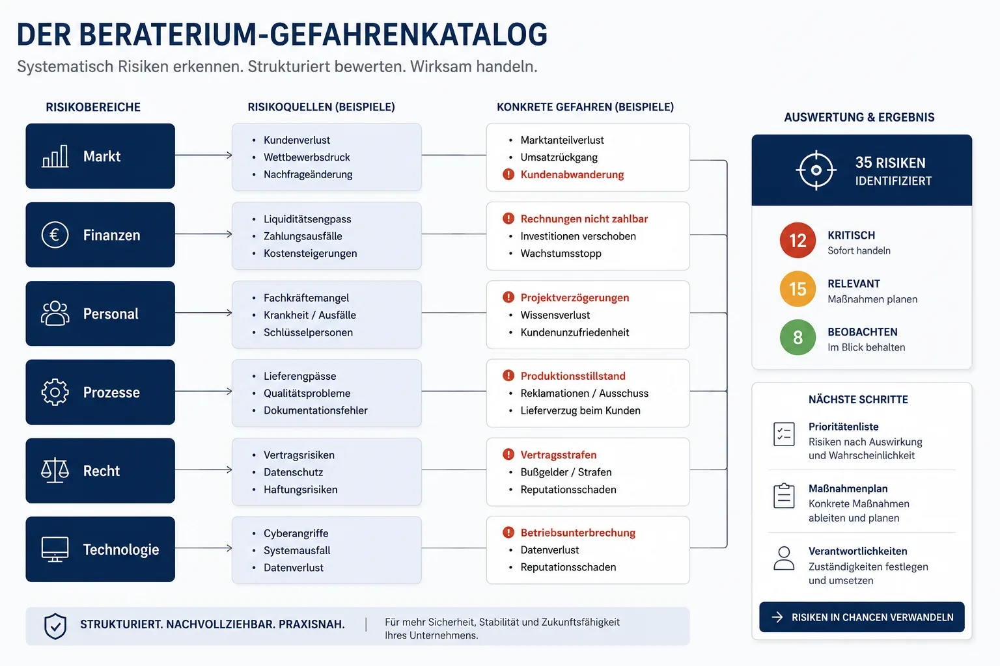

WIE WIR ARBEITEN
Von Bauchgefühl zu Klarheit – in nachvollziehbaren Schritten
Unsere Methode trennt bewusst drei Fragen: Was passiert im schlimmsten Fall? Wie oft passiert das? Und was haben Sie heute schon dagegen getan? So entsteht Schritt für Schritt ein klares Bild.
Was ist der Gefahrenkatalog – und warum 3 Ebenen?
Der Gefahrenkatalog sammelt zunächst neutral und vollständig, was einem Unternehmen schaden kann – ohne zu bewerten, wie wahrscheinlich oder schlimm etwas ist. Damit die Zahl möglicher Gefahren handhabbar bleibt, ist der Katalog auf drei klare Ebenen begrenzt.
Wir arbeiten bewusst mit Gefahren, weil sie eine neutrale Ausgangsbasis bilden. Erst im zweiten Schritt werden daraus Risiken – wenn wir bewerten, wie relevant eine Gefahr konkret für Ihr Unternehmen ist.

Wie bewerten wir, wie groß ein Risiko wirklich ist?
Wir gehen vom Gefühl zum konkreten Szenario. Statt zu fragen ‚Wie wahrscheinlich ist das?', sagen wir: ‚Stell dir vor, es ist bereits passiert.' Dann schätzen wir, was dieses Ereignis konkret für Ihr Unternehmen bedeutet – und übersetzen den Schaden in Euro.
Beispiel
Gefahr: Ausfall der Unternehmerperson (Schlüsselperson). Leitfrage: Was passiert, wenn Sie morgen nicht arbeiten können? Szenario: Ausfall für 4 Wochen. → Auf dieser Basis wird das Schadensausmaß in Euro eingeschätzt.
„Tendenz vor absoluter Genauigkeit."
Lieber eine gute Schätzung als eine perfekte Rechnung, die nie gemacht wird.
Wird angerechnet, was wir schon tun?
Ja. Parallel zur Schadenshöhe bewerten wir die Eintrittswahrscheinlichkeit – in verständlichen Zeiträumen wie Wochen, Monaten oder Jahren. Und wir berücksichtigen Ihr ‚Inventar': vorhandene Maßnahmen, die das Risiko heute schon reduzieren.
Etwa eine Vertretung, die kurzfristig rund 50 % übernehmen kann. Der Schaden wäre grundsätzlich höher – wird durch solche Maßnahmen aber deutlich gemindert.
Warum bewerten mehrere Personen statt einer?
Weil mehrere Blickwinkel zu einer realistischeren Einschätzung führen als eine Einzelmeinung. Im Unternehmen geschieht das idealerweise mit verschiedenen Verantwortlichen und Mitarbeitenden – im Mittelpunkt steht dabei immer der Mitarbeiter, nicht das System.
Und wenn ich allein bin?
Bei Solo-Selbstständigen und Kleinstunternehmen ersetzen wir das fehlende Team gezielt: zwei Moderatoren, die strukturieren und hinterfragen, plus einen KI-gestützten Impulsgeber für statistische Einschätzungen und Erfahrungswerte.
Was passiert nach der Analyse?
Die Analyse schafft Klarheit – der eigentliche Mehrwert entsteht in der Umsetzung. Dafür stehen drei Wege offen. Welchen Sie wählen, entscheiden Sie. Beraterium bleibt die Klammer.
Selbst umsetzen
Mit Ihrer eigenen Mannschaft. Geeignet für organisatorische oder einfache Maßnahmen und vorhandene Kompetenzen.
Mit Ihren Dienstleistern
Mit vertrauten Partnern weiterarbeiten. Geeignet für gewachsene Geschäftsbeziehungen und etablierte Strukturen.
Wir koordinieren
Ein fester Ansprechpartner, ‚one face to the customer'. Wir bringen die richtigen Menschen zusammen und sorgen, dass Maßnahmen ineinandergreifen.
„Wir liefern keine Analyse zum Ablegen – sondern Lösungen zum Umsetzen."
Wie wählen wir aus, welche Maßnahmen wirklich helfen?
Wir kümmern uns zuerst um die größten Risiken. Jede Maßnahme verfolgt genau einen Zweck: die Schadenshöhe senken und/oder die Eintrittswahrscheinlichkeit reduzieren.
„Wir suchen nicht die meisten Maßnahmen – sondern die richtigen."
Welche Methoden und Prozesse nutzt Beraterium?
Unser Risikomanagement-Prozess folgt drei klaren Phasen: Gefahren sammeln, Risiken in Euro bewerten, Maßnahmen priorisieren. Kein Konzern-Framework — sondern ein wiederholbarer Ablauf, den KMU, Startups und Solo in 2–6 Wochen durchlaufen.
Die Methoden sind bewusst schlank: strukturierte Workshops, Leitfragen statt Excel-Monster, Bewertung durch mehrere Blickwinkel. So entsteht ein Risiko-Lagebild, das Sie umsetzen können — nicht eine Mappe für die Schublade.
ISO 31000 und die Beraterium-Methode
ISO 31000 beschreibt den Rahmen für Risikomanagement — Kontext, Identifikation, Analyse, Behandlung. Beraterium ist kein ISO-Zertifizierer, orientiert sich aber an denselben Prinzipien: systematisch sammeln, transparent bewerten, Maßnahmen nach Wirkung priorisieren.
Der Unterschied: Wir übersetzen den Standard in Euro, Zeiträume und konkrete Schritte für Unternehmen ohne eigenes Risk-Office — verständlich, praxisnah, ohne Bürokratie.
Risiken und Chancen in der Matrix
Klassische Risiko-Chancen-Matrizen sortieren nach Wahrscheinlichkeit und Auswirkung — oft als Ampel. Beraterium ersetzt die Farben durch Euro: Schadenshöhe × Eintrittswahrscheinlichkeit, abzüglich vorhandener Maßnahmen. So sehen Sie sofort, welche drei Risiken wirklich teuer werden.
Chancen behandeln wir nicht als Gegenpol, sondern als Maßnahmen mit positivem Effekt — etwa Diversifikation, die ein Klumpenrisiko senkt. Die Priorisierung bleibt dieselbe: größter Hebel zuerst.
Passende Angebote nach Zielgruppe
Die Methode ist überall dieselbe — der Umfang passt sich Ihrer Situation an:
- Risikomanagement Mittelstand → — 6-Wochen-Fahrplan für KMU
- Risikomanagement für Startups → — 4-Wochen-Check, investor-ready
- Risikomanagement für Selbstständige → — 2-Wochen-Kompass mit KI-Impulsgeber
Häufige Fragen zur Methode
Was ist ein Gefahrenkatalog im Risikomanagement?
Ein Gefahrenkatalog ist eine strukturierte, bewertungsfreie Liste aller Ereignisse, die einem Unternehmen schaden könnten. Der 3-Ebenen-Gefahrenkatalog von Beraterium hält die Anzahl handhabbar. Erst wenn der Katalog vollständig ist, beginnt die Bewertung.
Was ist der Unterschied zwischen Gefahr und Risiko?
Eine Gefahr ist alles, was schaden kann – neutral gesammelt. Zum Risiko wird sie erst, wenn wir einschätzen, wie wahrscheinlich das Eintreten ist und welchen Schaden es in Euro verursachen würde.
Warum bewertet Beraterium Risiken in Euro statt mit Ampelfarben?
Ampelfarben sind subjektiv. Ein Schaden in Euro ist konkret verhandelbar und ermöglicht objektive Priorisierung — größter Schaden zuerst, unabhängig von Bauchgefühl oder Hierarchie.
Was ist ein Risikomanagement-Prozess und wie sieht er bei Beraterium aus?
Drei Phasen: (1) Gefahren sammeln im 3-Ebenen-Gefahrenkatalog, (2) Risiken bewerten — Schaden in Euro × Eintrittswahrscheinlichkeit, abzüglich vorhandener Maßnahmen, (3) die wenigen Maßnahmen mit dem größten Wirkungsgrad umsetzen.
Wie lange dauert eine Risikoanalyse?
Je nach Zielgruppe typischerweise 2 Wochen (Solo) bis 6 Wochen (KMU). Den genauen Rahmen legen wir im Kick-off fest.
Brauche ich Vorwissen oder Vorbereitung?
Nein. Sie bringen Ihr Wissen über Ihr Unternehmen mit – die Struktur und die Methode bringen wir mit.
Was, wenn ich allein arbeite?
Dann ersetzen zwei Moderatoren und ein KI-Impulsgeber das fehlende Team, damit die Bewertung trotzdem ausgewogen ist.
Setzt ihr die Maßnahmen auch um?
Sie entscheiden über den Weg: selbst, mit Ihren Dienstleistern oder durch unsere Koordination über das RisikoRadar-Netzwerk. Beraterium bleibt die Klammer.
Machen Sie Ihre Risiken sichtbar
Im kostenlosen Erstgespräch zeigen wir Ihnen, wie die Methode konkret für Ihr Unternehmen aussieht.
Kostenloses Erstgespräch buchen